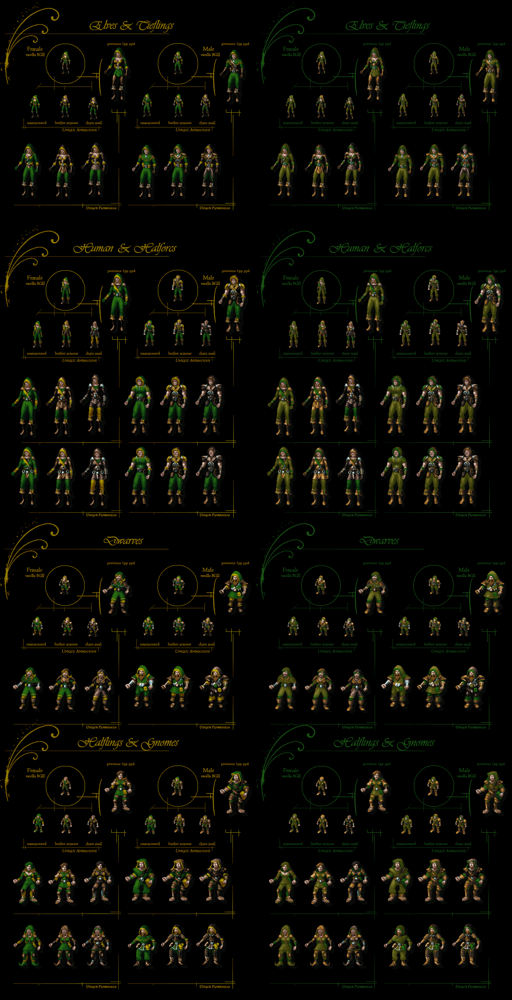

Overview
Supports: BGII SoA, BGII ToB, Tutu, IWD HoW, IWD TotL, IWDII
Requires: [106-109] Dwarven Female Avatars
This component will restore full thief animation avatar sequences.

Visit the website or forum for all the latest updates.
•BACK TO TOP
Additional Information
Contains: Unique Thief Avatars (patch & content)
This will patch your executable to support full thief animation sequences.
In standard BGII only one armour level of thieves had unique animations (leather armour). Any other armour level would revert to the default unarmoured animation. On the inventory, the first two armour levels had unique paperdolls, anything else would revert to the unarmoured paperdoll.
In other words, you could not have unarmoured thieves that looked like thieves, and if you switched bards to use thief avatars, you could not have chain mail showing up properly.
By contrast, in standard IWD, unarmoured thieves are supported, but chain mail is not - Bards use thief animations by default in IWD, so they could look okay for the first two armour levels, but you can't equip chain mail and have it look right. Note that the game content is directly copied from BGII so even if the first two armour levels *are* supported, their ingame animations are identical (as BGII only had the one).
IWD II supports three armour levels for thieves natively, so this component is unnecessary for IWD II installs. Again the content was simply copied from BGII so the first two look identical to a BGII thief, with the third being the uniform chain mail animation.
After installing, thieves will now have unique animations and paperdolls for the first three armour levels. The plate mail animations (and paperdolls) are copied from cleric and fighter animations (because let's face it, plate mail is not very subtle).

•BACK TO TOP